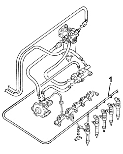

1060OC INJECTORS SEAL TEST
- Path
- Test > 10 ENGINE > 1060 DIESEL INJECTION SYSTEM > 1060O DIESEL FUEL INJECTION SYSTEM TESTS > 1060OC INJECTORS SEAL TEST
- Kind
- test / check procedure
- Applies to
- engines: 2.4 JTD 20v; all production periods
- Interactive page
- https://sloeber94.github.io/elrnDB-aBrrSpdr/en/#/946003552
Applies to: engines: 2.4 JTD 20v; all production periods
Disconnect the electrical connections from all the injectors.
1. Disconnect the fuel recirculation pipes from all the injectors.

Applies to: engines: 2.4 JTD 20v; all production periods
Press the START/STOP and check visually that the quantity of recirculated fuel leaving the injector connections are approximately the same and small in amount
Topics that link to this page (8)
- B010 ENGINE DOES NOT START (UNDER ANY CIRCUMSTANCES)
- D021 ENGINE CUTS OUT WHILST RUNNING AND THEN RESTARTS
- D014 ENGINE CUTS OUT WHEN IDLING (THEN RESTARS)
- D020 ENGINE CUTS OUT WHILST RUNNING (THEN DOES NOT RESTART)
- Y002 P0087 - PRESSURE ON FLUTE
- Y003 P0088 - PRESSURE ON FLUTE
- Y104 P0237 - TURBO PRESSURE
- Y105 P0238 - TURBO PRESSURE